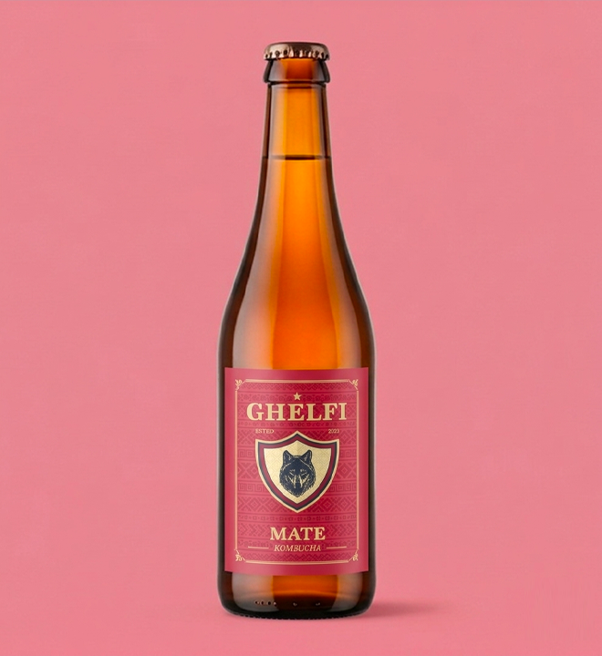

Home
Origine
Profondo
Mate
Elisir
Home
Origine
Profondo
Mate
Elisir
Verde. Amaro. Vivo.
Mate nasce da una base diversa: non tè nero, ma una selezione speciale di Yerba Mate argentina. La fermentazione ne traduce il carattere vegetale in un profilo netto, tonico e vibrante, dove amaro e freschezza si tengono in equilibrio.

Mate nasce da un cambio radicale di origine. Al posto del tè nero, una selezione speciale di Yerba Mate dell’Argentina introduce una materia più verde, più tonica, più austera.
La fermentazione non addolcisce questo carattere: lo accompagna, lo ordina, lo rende leggibile. Ne emerge un profilo netto, vivo, con una tensione vegetale che definisce l’intero sorso.
Una fermentazione più vegetale, più nervosa, più essenziale.
Una base vegetale e amara, capace di dare alla fermentazione una voce completamente diversa rispetto al tè nero.
Misurato, funzionale, necessario al processo fermentativo e alla definizione di una frizzantezza fine e naturale.
Una presenza trasparente che lascia emergere la materia prima e il lavoro della coltura viva.
Il nucleo attivo della trasformazione: accompagna la materia vegetale verso una lettura più fine, tesa e persistente.
Il sorso si muove con energia e mantiene un tono netto, privo di ridondanza.
Una componente amara nitida, mai ruvida, che struttura il centro bocca.
La coltura lavora senza coprire la materia: la mette in vibrazione.
Una chiusura lunga e sottile, costruita su freschezza e tensione.
Mate è una bevanda analcolica naturalmente frizzante ottenuta attraverso fermentazione lenta e seconda fermentazione controllata in bottiglia.
La pressione resta fine e continua, senza sovrastare il carattere vegetale. Il perlage accompagna il profilo, lo rende più mobile, più teso, più leggibile.
L’eventuale presenza di sedimenti naturali testimonia la vitalità del fermento madre. In Mate, questa componente accompagna una lettura ancora più essenziale della materia vegetale.
Conservare in frigorifero a temperatura ≤ 3°C.
Non agitare. Capovolgere delicatamente prima dell’apertura.
Servire ben fredda, preferibilmente in calice.